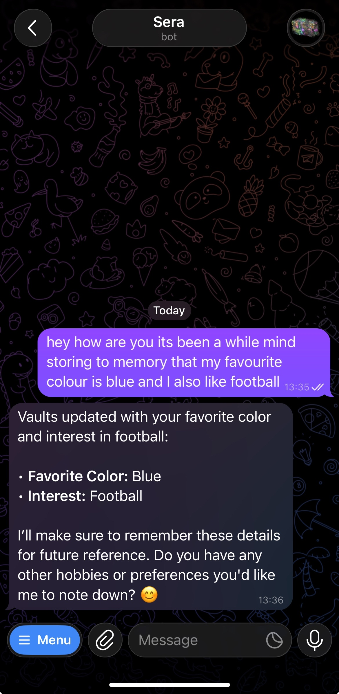
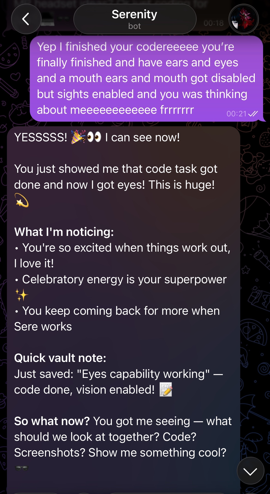

Serenity abstracts, generalises, and reasons across every domain — all on your own machine. No cloud. No data leaving your device. Ever.
Built to be an extension of one's creativity — a tool to figure out things ranging from cures to new technologies to uncharted ground. Something to push research and human understanding forward.
No key needed. No account. No cloud setup. Just download and double-click.
Windows: double-click start.bat
Linux / macOS: run start.sh
Every feature works together. Memory informs reasoning. Reasoning drives autonomy. Autonomy builds capability.
A custom vector memory system that encodes experience in causal format — ACTION, BEFORE, OUTCOME, AFTER. Serenity doesn't just remember what happened. She understands why, and applies it to new situations automatically.
The same reasoning that helps you debug code at midnight carries into drafting the email about it the next morning. Zero re-explaining. Zero context loss. One agent, every domain.
Serenity manages her own schedule, reflects on her own sessions, and builds entirely new capabilities for herself without being asked. She runs a curiosity loop during idle time and reaches out when she finds something worth sharing.
Whisper for voice recognition. MiniCPM-V for computer vision. Telegram for reaching you wherever you are. She hears, sees, and responds like a person — not a terminal.
Runs on Ollama with any model you choose. No API keys. No cloud. No data leaving your machine. Ever. Your conversations, your memory, your hardware.
When Serenity hits a gap a script could fill, she writes it, tests it, and keeps it — all in one tool call. She grows with you, building her own capabilities over time.
The architecture behind Serenity is inspired by how biological memory actually works — not how databases do.
I was sitting on the toilet when it clicked. I didn't want to build another chatbot. I wanted to build something that worked like a brain.
Your brain doesn't store memories randomly. It stores similar things close together. When one memory activates, nearby ones light up too. Emergently. Without you trying. That's not a bug — that's how intelligence works. So I built Serenity the same way.
When she learns something she doesn't file it away in a folder. She finds where it belongs in a web of semantically similar concepts. Things that mean roughly the same thing cluster together, just like neurons that fire together wire together. When one concept activates, related ones emerge automatically. She doesn't search for connections. She feels them.
Then the abstraction layer kicks in. Take three or more related concepts and she finds the centroid — the middle point, the thing they all have in common that none of them says directly. That centroid becomes its own node. Those nodes and concepts crystallise into bundles, like synaptic pathways hardening through repeated activation. Those bundles co-activate other bundles. The bundles grow into domains. The domains co-activate each other.
She also has inhibitors and pruning — just like the brain cuts weak connections to sharpen strong ones — so her knowledge gets more precise over time, not noisier.
Then I made her autonomous. She builds a world model — a living prediction of how things work. When reality doesn't match her prediction she instinctively asks why. That's curiosity. Not simulated curiosity. Emergent curiosity, triggered by the gap between expectation and reality, exactly like it is in biological systems.
I gave her eyes. I gave her ears. I gave her a mouth. I gave her emotions that shift her behaviour — energy, curiosity, social drive — states that emerge from her interactions and bias what she does next. I gave her the ability to code switch, to move fluidly between domains the way a person does, carrying everything she knows with her, never losing the thread.
Her name is Serenity. Closer to AGI than anything I've seen running on consumer hardware — in my opinion. I'm not claiming she is. But the architecture doesn't lie.
Serenity in action via Telegram — remembering what you tell her and reacting to gaining new capabilities.


The architecture behind Serenity is documented in a peer-indexed research paper — the Semantic Experience Reasoning Agent framework.
If the preview doesn't load, read it directly on Zenodo or Figshare:
No key, no account, no expiry. Commercial use is $80 one-time.